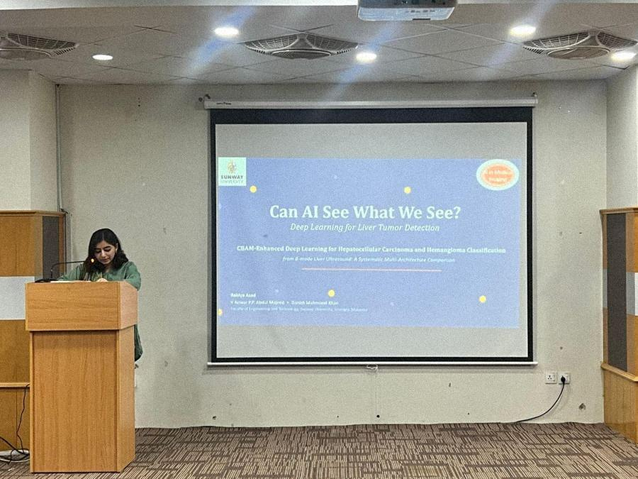
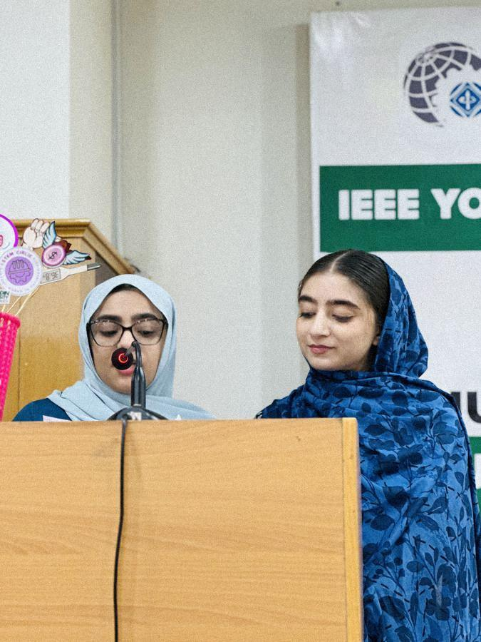
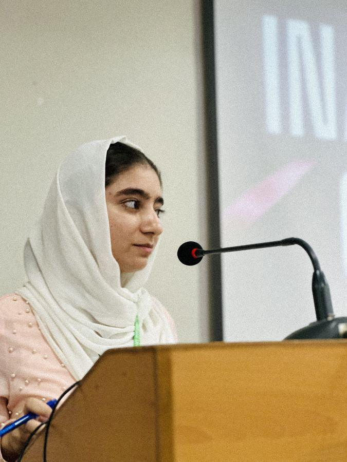
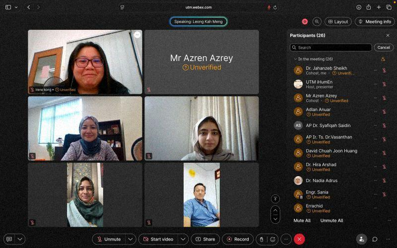

DAWN News: Chai Toast Aur Host
Guest on Dawn News TV's morning show with the Connector.global leadership team, speaking on how AI is rewriting education.
Hosting events, mentorship and public appearances.
Connector.global webinar
Connector.global webinar
Connector.global webinar



Mathematics, English (ESL), Computer Science
Pearson Edexcel, Oxford AQA, Cambridge CAIE, AKUEB
Guest on Dawn News TV's morning show with the Connector.global leadership team, speaking on how AI is rewriting education.
Featured in Resident Diaries by Lakhani Presidency, shared on Instagram.

Presentation of Virtual Simulation Platform for Biomedical Engineering Education
Izma presented SIM-IE, a proposed virtual simulation platform for biomedical engineering education, among researchers from Pakistan, Malaysia, the United States and Italy.